- Define sound and hearing.
- Describe sound as a longitudinal wave.
Sound can be used as a familiar illustration of waves. Because hearing is one of our most important senses, it is interesting to see how the physical properties of sound correspond to our perceptions of it.Hearingis the perception of sound, just as vision is the perception of visible light. But sound has important applications beyond hearing. Ultrasound, for example, is not heard but can be employed to form medical images and is also used in treatment.
The physical phenomenon ofsoundis defined to be a disturbance of matter that is transmitted from its source outward. Sound is a wave. On the atomic scale, it is a disturbance of atoms that is far more ordered than their thermal motions. In many instances, sound is a periodic wave, and the atoms undergo simple harmonic motion. In this text, we shall explore such periodic sound waves.
A vibrating string produces a sound wave as illustrated in Figures -. As the string oscillates back and forth, it transfers energy to the air, mostly as thermal energy created by turbulence. But a small part of the string’s energy goes into compressing and expanding the surrounding air, creating slightly higher and lower local pressures. These compressions (high pressure regions) and rarefactions (low pressure regions) move out as longitudinal pressure waves having the same frequency as the string—they are the disturbance that is a sound wave. (Sound waves in air and most fluids are longitudinal, because fluids have almost no shear strength. In solids, sound waves can be both transverse and longitudinal.) Figure shows a graph of gauge pressure versus distance from the vibrating string.
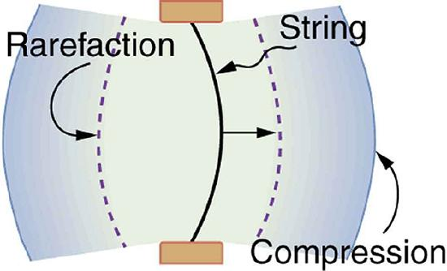
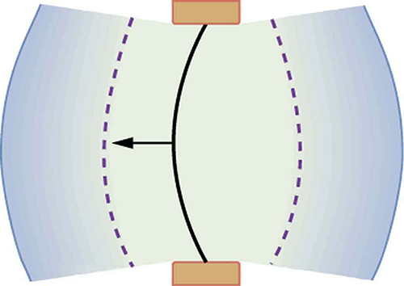
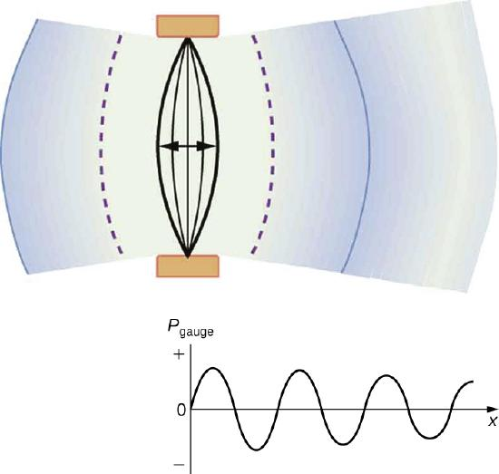
The amplitude of a sound wave decreases with distance from its source, because the energy of the wave is spread over a larger and larger area. But it is also absorbed by objects, such as the eardrum in Figure , and converted to thermal energy by the viscosity of air. In addition, during each compression a little heat transfers to the air and during each rarefaction even less heat transfers from the air, so that the heat transfer reduces the organized disturbance into random thermal motions. (These processes can be viewed as a manifestation of the second law of thermodynamics presented inIntroduction to the Second Law of Thermodynamics: Heat Engines and Their Efficiency.) Whether the heat transfer from compression to rarefaction is significant depends on how far apart they are—that is, it depends on wavelength. Wavelength, frequency, amplitude, and speed of propagation are important for sound, as they are for all waves.
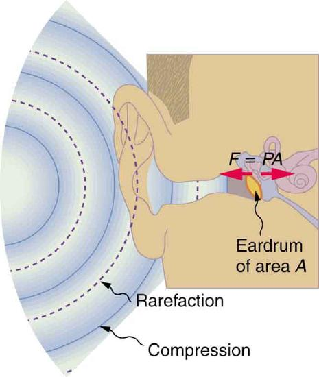
PHET EXPLORATIONS: WAVE INTERFERENCE
Make waves with a dripping faucet, audio speaker, or laser! Add a second source or a pair of slits to create an interference pattern.

📖 OpenStax College Physics, Section 17.1. openstax.org · CC BY 4.0
- Define pitch.
- Describe the relationship between the speed of sound, its frequency, and its wavelength.
- Describe the effects on the speed of sound as it travels through various media.
- Describe the effects of temperature on the speed of sound.
Sound, like all waves, travels at a certain speed and has the properties of frequency and wavelength. You can observe direct evidence of the speed of sound while watching a fireworks display. The flash of an explosion is seen well before its sound is heard, implying both that sound travels at a finite speed and that it is much slower than light. You can also directly sense the frequency of a sound. Perception of frequency is calledpitch. The wavelength of sound is not directly sensed, but indirect evidence is found in the correlation of the size of musical instruments with their pitch. Small instruments, such as a piccolo, typically make high-pitch sounds, while large instruments, such as a tuba, typically make low-pitch sounds. High pitch means small wavelength, and the size of a musical instrument is directly related to the wavelengths of sound it produces. So a small instrument creates short-wavelength sounds. Similar arguments hold that a large instrument creates long-wavelength sounds.
The relationship of the speed of sound, its frequency, and wavelength is the same as for all waves:
where \(v_w\) is the speed of sound, \(f\) is its frequency, and \(\lambda\) is its wavelength. The wavelength of a sound is the distance between adjacent identical parts of a wave—for example, between adjacent compressions as illustrated in Figure . The frequency is the same as that of the source and is the number of waves that pass a point per unit time.
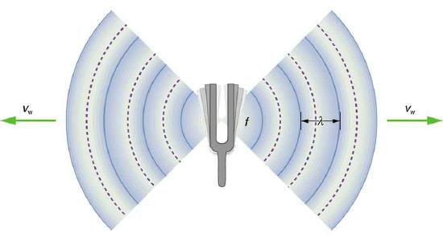
Table makes it apparent that the speed of sound varies greatly in different media. The speed of sound in a medium is determined by a combination of the medium’s rigidity (or compressibility in gases) and its density. The more rigid (or less compressible) the medium, the faster the speed of sound. For materials that have similar rigidities, sound will travel faster through the one with the lower density because the sound energy is more easily transferred from particle to particle. The speed of sound in air is low, because air is compressible. Because liquids and solids are relatively rigid and very difficult to compress, the speed of sound in such media is generally greater than in gases.
| Medium | \(v_w(m/s)\) |
|---|---|
| Gases at \(0^oC\) | |
| Air | 331 |
| Carbon dioxide | 259 |
| Oxygen | 316 |
| Helium | 965 |
| Hydrogen | 1290 |
| Liquids at \(20^oC\) | |
| Ethanol | 1160 |
| Mercury | 1450 |
| Water, fresh | 1480 |
| Sea water | 1540 |
| Human tissue | 1540 |
| Solids (longitudinal or bulk) | |
| Vulcanized rubber | 54 |
| Polyethylene | 920 |
| Marble | 3810 |
| Glass, Pyrex | 5640 |
| Lead | 1960 |
| Aluminum | 5120 |
| Steel | 5960 |
Earthquakes, essentially sound waves in Earth’s crust, are an interesting example of how the speed of sound depends on the rigidity of the medium. Earthquakes have both longitudinal and transverse components, and these travel at different speeds. The bulk modulus of granite is greater than its shear modulus. For that reason, the speed of longitudinal or pressure waves (P-waves) in earthquakes in granite is significantly higher than the speed of transverse or shear waves (S-waves). Both components of earthquakes travel slower in less rigid material, such as sediments. P-waves have speeds of 4 to 7 km/s, and S-waves correspondingly range in speed from 2 to 5 km/s, both being faster in more rigid material. The P-wave gets progressively farther ahead of the S-wave as they travel through Earth’s crust. The time between the P- and S-waves is routinely used to determine the distance to their source, the epicenter of the earthquake.
The speed of sound is affected by temperature in a given medium. For air at sea level, the speed of sound is given by
where the temperature (denoted as \(T\)) is in units of kelvin. The speed of sound in gases is related to the average speed of particles in the gas, \(v_{rms}\), and that
where \(k\) is the Boltzmann constant \((1.38 \times 10^{-23} \, J/K)\) and \(m\) is the mass of each (identical) particle in the gas. So, it is reasonable that the speed of sound in air and other gases should depend on the square root of temperature. While not negligible, this is not a strong dependence. At \(0^oC\), the speed of sound is 331 m/s, whereas at \(20^oC\) it is 343 m/s, less than a 4% increase. Figure shows a use of the speed of sound by a bat to sense distances. Echoes are also used in medical imaging.
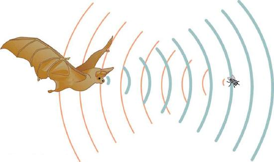
One of the more important properties of sound is that its speed is nearly independent of frequency. This independence is certainly true in open air for sounds in the audible range of 20 to 20,000 Hz. If this independence were not true, you would certainly notice it for music played by a marching band in a football stadium, for example. Suppose that high-frequency sounds traveled faster—then the farther you were from the band, the more the sound from the low-pitch instruments would lag that from the high-pitch ones. But the music from all instruments arrives in cadence independent of distance, and so all frequencies must travel at nearly the same speed. Recall that
In a given medium under fixed conditions, \(v_w\) is constant, so that there is a relationship between \(f\) and \(\lambda\); the higher the frequency, the smaller the wavelength. See Figure and consider the following example.
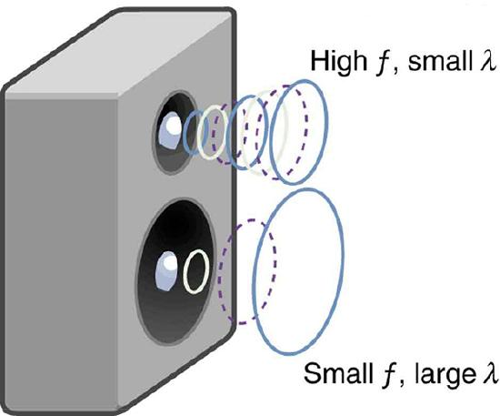
Calculate the wavelengths of sounds at the extremes of the audible range, 20 and 20,000 Hz, in \(30.0^oC\) air. (Assume that the frequency values are accurate to two significant figures.)
To find wavelength from frequency, we can use \(v_w = f\lambda\).
Because the product of \(f\) multiplied by \(\lambda\) equals a constant, the smaller \(f\) is, the larger \(\lambda\) must be, and vice versa.
The speed of sound can change when sound travels from one medium to another. However, the frequency usually remains the same because it is like a driven oscillation and has the frequency of the original source. If \(v_w\) changes and \(f\) remains the same, then the wavelength \(\lambda\) must change. That is, because \(v_w = f\lambda\), the higher the speed of a sound, the greater its wavelength for a given frequency.
MAKING CONNECTIONS: TAKE-HOME INVESTIGATION - VOICE AS A SOUND WAVE
Suspend a sheet of paper so that the top edge of the paper is fixed and the bottom edge is free to move. You could tape the top edge of the paper to the edge of a table. Gently blow near the edge of the bottom of the sheet and note how the sheet moves. Speak softly and then louder such that the sounds hit the edge of the bottom of the paper, and note how the sheet moves. Explain the effects.
Exercise \(\PageIndex{1A}\)
Imagine you observe two fireworks explode. You hear the explosion of one as soon as you see it. However, you see the other firework for several milliseconds before you hear the explosion. Explain why this is so.
Sound and light both travel at definite speeds. The speed of sound is slower than the speed of light. The first firework is probably very close by, so the speed difference is not noticeable. The second firework is farther away, so the light arrives at your eyes noticeably sooner than the sound wave arrives at your ears.
Exercise \(\PageIndex{1B}\)
You observe two musical instruments that you cannot identify. One plays high-pitch sounds and the other plays low-pitch sounds. How could you determine which is which without hearing either of them play?
Compare their sizes. High-pitch instruments are generally smaller than low-pitch instruments because they generate a smaller wavelength.
📖 OpenStax College Physics, Section 17.2. openstax.org · CC BY 4.0
- Define intensity, sound intensity, and sound pressure level.
- Calculate sound intensity levels in decibels (dB).
In a quiet forest, you can sometimes hear a single leaf fall to the ground. After settling into bed, you may hear your blood pulsing through your ears. But when a passing motorist has his stereo turned up, you cannot even hear what the person next to you in your car is saying. We are all very familiar with the loudness of sounds and aware that they are related to how energetically the source is vibrating. In cartoons depicting a screaming person (or an animal making a loud noise), the cartoonist often shows an open mouth with a vibrating uvula, the hanging tissue at the back of the mouth, to suggest a loud sound coming from the throat Figure . High noise exposure is hazardous to hearing, and it is common for musicians to have hearing losses that are sufficiently severe that they interfere with the musicians’ abilities to perform. The relevant physical quantity is sound intensity, a concept that is valid for all sounds whether or not they are in the audible range.
Intensity is defined to be the power per unit area carried by a wave. Power is the rate at which energy is transferred by the wave. In equation form,intensity\(I\) is
where \(P\)is the power through an area \(A\). The SI unit for \(I\) is \(W/m^2\). The intensity of a sound wave is related to its amplitude squared by the following relationship:
Here \(\Delta p\) is the pressure variation or pressure amplitude (half the difference between the maximum and minimum pressure in the sound wave) in units of pascals (Pa) or \(N/m^2\). (We are using a lower case \(p\) for pressure to distinguish it from power, denoted by \(P\) above.) The energy (as kinetic energy \(\frac{mv^2}{2}\)) of an oscillating element of air due to a traveling sound wave is proportional to its amplitude squared. In this equation, \(\rho\) is the density of the material in which the sound wave travels, in units of \(kg/m^3\), and \(v_w\) is the speed of sound in the medium, in units of m/s. The pressure variation is proportional to the amplitude of the oscillation, and so \(I\) varies as (\(\Delta p)^2\) (Figure . This relationship is consistent with the fact that the sound wave is produced by some vibration; the greater its pressure amplitude, the more the air is compressed in the sound it creates.
![The image shows two graphs, with a bird positioned to the left of each one. The first graph represents a low frequency sound of a bird. The pressure variation shows small amplitude maxima and minima, represented by a sine curve of gauge pressure versus position with a small amplitude. The second graph represents a high frequency sound of a screaming bird. The pressure variation shows large amplitude maxima and minima, represented by a sine curve of gauge pressure versus position with a large amplitude.](images/ch17/fig17-13-the-image-shows-two-graphs-with-a-bird-p.jpg)
Sound intensity levels are quoted in decibels (dB) much more often than sound intensities in watts per meter squared. Decibels are the unit of choice in the scientific literature as well as in the popular media. The reasons for this choice of units are related to how we perceive sounds. How our ears perceive sound can be more accurately described by the logarithm of the intensity rather than directly to the intensity. Thesound intensity level \(\beta\)in decibels of a sound having an intensity \(I\) in watts per meter squared is defined to be
where \(I_0 = 10^{-12} \, W/m^2\) is a reference intensity. In particular, \(I_0\) is the lowest or threshold intensity of sound a person with normal hearing can perceive at a frequency of 1000 Hz. Sound intensity level is not the same as intensity. Because \(\beta\) is defined in terms of a ratio, it is a unitless quantity telling you thelevelof the sound relative to a fixed standard (\(10^{-12} \, W/m^2\), in this case). The units of decibels (dB) are used to indicate this ratio is multiplied by 10 in its definition. The bel, upon which the decibel is based, is named for Alexander Graham Bell, the inventor of the telephone.
| Sound intensity level \(\beta\) (dB) | Intensity \(I(W?M^2)\) | Example/effect |
|---|---|---|
| 0 | \(1 \times 10^{-12}\) | Threshold of hearing at 1000 Hz |
| 10 | \(1 \times 10^{-11}\) | Rustle of leaves |
| 20 | \(1 \times 10^{-10}\) | Whisper at 1 m distance |
| 30 | \(1 \times 10^{-9}\) | Quiet home |
| 40 | \(1 \times 10^{-8}\) | Average home |
| 50 | \(1 \times 10^{-7}\) | Average office, soft music |
| 60 | \(1 \times 10^{-6}\) | Normal conversation |
| 70 | \(1 \times 10^{-5}\) | Noisy office, busy traffic |
| 80 | \(1 \times 10^{-4}\) | Loud radio, classroom lecture |
| 90 | \(1 \times 10^{-3}\) | Inside a heavy truck; damage from prolonged exposure1 |
| 100 | \(1 \times 10^{-2}\) | Noisy factory, siren at 30 m; damage from 8 h per day exposure |
| 110 | \(1 \times 10^{-1}\) | Damage from 30 min per day exposure |
| 120 | 1 | Loud rock concert, pneumatic chipper at 2 m; threshold of pain |
| 140 | \(1 \times 10^2\) | Jet airplane at 30 m; severe pain, damage in seconds |
| 160 | \(1 \times 10^4\) | Bursting of eardrums |
The decibel level of a sound having the threshold intensity of \(10^{-12} \, W/m^2\) is \(\beta = 0 \, dB\), because \(log_{10}1 = 0\). That is, the threshold of hearing is 0 decibels. Table gives levels in decibels and intensities in watts per meter squared for some familiar sounds.
One of the more striking things about the intensities in Table is that the intensity in watts per meter squared is quite small for most sounds. The ear is sensitive to as little as a trillionth of a watt per meter squared—even more impressive when you realize that the area of the eardrum is only about \(1 \, cm^2\), so that only \(10^{-16}\) W falls on it at the threshold of hearing! Air molecules in a sound wave of this intensity vibrate over a distance of less than one molecular diameter, and the gauge pressures involved are less than \(10^{-9}\) atm.
Another impressive feature of the sounds in Table is their numerical range. Sound intensity varies by a factor of \(10^{12}\) from threshold to a sound that causes damage in seconds. You are unaware of this tremendous range in sound intensity because how your ears respond can be described approximately as the logarithm of intensity. Thus, sound intensity levels in decibels fit your experience better than intensities in watts per meter squared. The decibel scale is also easier to relate to because most people are more accustomed to dealing with numbers such as 0, 53, or 120 than numbers such as \(1.00 \times 10^{-11}\).
One more observation readily verified by examining Table or using Equation \ref{eq2} is that each factor of 10 in intensity corresponds to 10 dB. For example, a 90 dB sound compared with a 60 dB sound is 30 dB greater, or three factors of 10 (that is, \(10^3\) times) as intense. Another example is that if one sound is \(10^7\) as intense as another, it is 70 dB higher. See Table .
| \(I_2/I_1\) | \(\beta_2/\beta_1\) |
|---|---|
| 2.0 | 3.0 dB |
| 5.0 | 7.0 dB |
| 10.0 | 10.0 dB |
Calculate the sound intensity level in decibels for a sound wave traveling in air at \(0^oC\) and having a pressure amplitude of 0.656 Pa.
We are given \(\Delta p\), so we can calculate \(I\) using the equation \(I = (\Delta p)^2/(2pv_w)^2\). Using \(I\), we can calculate \(\beta\) straight from its definition in \(\beta \, (dB) = 10 \, \log_{10}(I/I_0).\)
Sound travels at 331 m/s in air at \(0^oC\).
Air has a density of \(1.29 \, kg/m^3\) at atmospheric pressure and \(0^oC\).
(2) Enter these values and the pressure amplitude into \(I = (\Delta p)^2 / (2\rho v_w)\): \[\begin{align*} I &= \dfrac{(\Delta p)^2}{2\rho v_w} \\[5pt] &= \dfrac{(0.656 \, Pa)^2}{(1.29 \, kg/m^3)(331 \, m/s)} \\[5pt] &= 5.04 \times 10^{-4} \, W/m^2 \end{align*}\]
(3) Enter the value for \(I\) and the known value for \(I_0\) into \(\beta (dB = 10 \, log_{10}(I/I_0)\). Calculate to find the sound intensity level in decibels: \[10 \, \log_{10}(5.04 \times 10^8) = 10 (8.70) \, dB = 87 \, dB. \nonumber\]
This 87 dB sound has an intensity five times as great as an 80 dB sound. So a factor of five in intensity corresponds to a difference of 7 dB in sound intensity level. This value is true for any intensities differing by a factor of five.
Show that if one sound is twice as intense as another, it has a sound level about 3 dB higher.
You are given that the ratio of two intensities is 2 to 1, and are then asked to find the difference in their sound levels in decibels. You can solve this problem using of the properties of logarithms.
The ratio of the two intensities is 2 to 1, or: \[\dfrac{I_2}{I_1} = 2.00. \nonumber\]
We wish to show that the difference in sound levels is about 3 dB. That is, we want to show: \[\beta_2 - \beta_1 = 3 \, dB.\]
Note that: \[log_{10}b - log_{10}a = log_{10} \left(\dfrac{b}{a}\right). \nonumber\]
(2) Use the definition of \(\beta\) to get: \[\beta_2 - \beta_1 = 10 \, log_{10} \left(\dfrac{I_2}{I_1} \right) = 10 \, log_{10}2.00 = 10 (0.301) \, dB.\] Thus, \[\beta_2 - \beta_1 = 3.01 \, dB. \nonumber\]
This means that the two sound intensity levels differ by 3.01 dB, or about 3 dB, as advertised. Note that because only the ratio \(I_2/I_1\) is given (and not the actual intensities), this result is true for any intensities that differ by a factor of two. For example, a 56.0 dB sound is twice as intense as a 53.0 dB sound, a 97.0 dB sound is half as intense as a 100 dB sound, and so on.
It should be noted at this point that there is another decibel scale in use, called thesound pressure level, based on the ratio of the pressure amplitude to a reference pressure. This scale is used particularly in applications where sound travels in water. It is beyond the scope of most introductory texts to treat this scale because it is not commonly used for sounds in air, but it is important to note that very different decibel levels may be encountered when sound pressure levels are quoted. For example, ocean noise pollution produced by ships may be as great as 200 dB expressed in the sound pressure level, where the more familiar sound intensity level we use here would be something under 140 dB for the same sound.
TAKE-HOME INVESTIGATION: FEELING SOUND
Find a CD player and a CD that has rock music. Place the player on a light table, insert the CD into the player, and start playing the CD. Place your hand gently on the table next to the speakers. Increase the volume and note the level when the table just begins to vibrate as the rock music plays. Increase the reading on the volume control until it doubles. What has happened to the vibrations?
Exercise
Describe how amplitude is related to the loudness of a sound.
Amplitude is directly proportional to the experience of loudness. As amplitude increases, loudness increases
Exercise
Identify common sounds at the levels of 10 dB, 50 dB, and 100 dB.
Several government agencies and health-related professional associations recommend that 85 dB not be exceeded for 8-hour daily exposures in the absence of hearing protection.
📖 OpenStax College Physics, Section 17.3. openstax.org · CC BY 4.0
- Define Doppler effect, Doppler shift, and sonic boom.
- Calculate the frequency of a sound heard by someone observing Doppler shift.
- Describe the sounds produced by objects moving faster than the speed of sound.
The characteristic sound of a motorcycle buzzing by is an example of theDoppler effect. The high-pitch scream shifts dramatically to a lower-pitch roar as the motorcycle passes by a stationary observer. The closer the motorcycle brushes by, the more abrupt the shift. The faster the motorcycle moves, the greater the shift. We also hear this characteristic shift in frequency for passing race cars, airplanes, and trains. It is so familiar that it is used to imply motion and children often mimic it in play.
The Doppler effect is an alteration in the observed frequency of a sound due to motion of either the source or the observer. Although less familiar, this effect is easily noticed for a stationary source and moving observer. For example, if you ride a train past a stationary warning bell, you will hear the bell’s frequency shift from high to low as you pass by. The actual change in frequency due to relative motion of source and observer is called aDoppler shift. The Doppler effect and Doppler shift are named for the Austrian physicist and mathematician Christian Johann Doppler (1803–1853), who did experiments with both moving sources and moving observers. Doppler, for example, had musicians play on a moving open train car and also play standing next to the train tracks as a train passed by. Their music was observed both on and off the train, and changes in frequency were measured.
What causes the Doppler shift? Figure , Figure , and Figure ompare sound waves emitted by stationary and moving sources in a stationary air mass. Each disturbance spreads out spherically from the point where the sound was emitted. If the source is stationary, then all of the spheres representing the air compressions in the sound wave centered on the same point, and the stationary observers on either side see the same wavelength and frequency as emitted by the source, as in Figure . If the source is moving, as in Figure , then the situation is different. Each compression of the air moves out in a sphere from the point where it was emitted, but the point of emission moves. This moving emission point causes the air compressions to be closer together on one side and farther apart on the other. Thus, the wavelength is shorter in the direction the source is moving (on the right in Figure , and longer in the opposite direction (on the left in Figure . Finally, if the observers move, as in Figure , the frequency at which they receive the compressions changes. The observer moving toward the source receives them at a higher frequency, and the person moving away from the source receives them at a lower frequency.
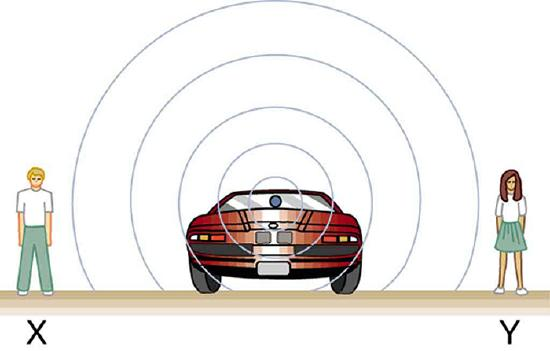
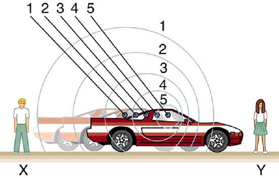
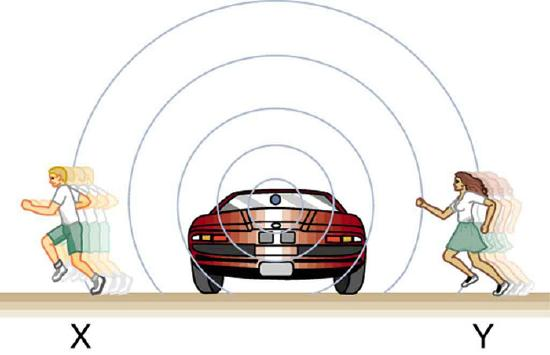
We know that wavelength and frequency are related by \(v_w = f\lambda\), where \(v_w\) is the fixed speed of sound. The sound moves in a medium and has the same speed \(v_w\) in that medium whether the source is moving or not. Thus \(f\) multiplied by \(\lambda\) is a constant. Because the observer on the right in Figure receives a shorter wavelength, the frequency she receives must be higher. Similarly, the observer on the left receives a longer wavelength, and hence he hears a lower frequency. The same thing happens in Figure . A higher frequency is received by the observer moving toward the source, and a lower frequency is received by an observer moving away from the source. In general, then, relative motion of source and observer toward one another increases the received frequency. Relative motion apart decreases frequency. The greater the relative speed is, the greater the effect.
The Doppler effect occurs not only for sound but for any wave when there is relative motion between the observer and the source. There are Doppler shifts in the frequency of sound, light, and water waves, for example. Doppler shifts can be used to determine velocity, such as when ultrasound is reflected from blood in a medical diagnostic. The recession of galaxies is determined by the shift in the frequencies of light received from them and has implied much about the origins of the universe. Modern physics has been profoundly affected by observations of Doppler shifts.
For a stationary observer and a moving source, the frequency \(f_{obs}\) received by the observer can be shown to be
where \(f_s\) is the frequency of the source, v_s\) is the speed of the source along a line joining the source and observer, and \(v_s\) is the speed of sound. The minus sign is used for motion toward the observer and the plus sign for motion away from the observer, producing the appropriate shifts up and down in frequency. Note that the greater the speed of the source, the greater the effect. Similarly, for a stationary source and moving observer, the frequency received by the observer \(f_{obs}\) is given by
where \(v_{obs}\) is the speed of the observer along a line joining the source and observer. Here the plus sign is for motion toward the source, and the minus is for motion away from the source.
Suppose a train that has a 150-Hz horn is moving at 35.0 m/s in still air on a day when the speed of sound is 340 m/s.
(a) What frequencies are observed by a stationary person at the side of the tracks as the train approaches and after it passes?
(b) What frequency is observed by the train’s engineer traveling on the train?
To find the observed frequency in (a), \(f_{obs} = f_s \left(\frac{v_s}{v_w \pm v_s}\right),\) must be used because the source is moving. The minus sign is used for the approaching train, and the plus sign for the receding train. In (b), there are two Doppler shifts—one for a moving source and the other for a moving observer.
(1) Enter known values into \(f_{obs} = f_s\left(\frac{v_w}{v_w - v_s}\right)\).
(2) Calculate the frequency observed by a stationary person as the train approaches. \[f_{obs} = (150 \, Hz)(1.11) = 167 \, Hz\]
(3) Use the same equation with the plus sign to find the frequency heard by a stationary person as the train recedes. \[f_{obs} = f_s\left(\dfrac{v_w}{v_w - v_s}\right) = (150 \, Hz)\left(\dfrac{340 \, m/s}{340n \, m/s + 35.0 \, m/s}\right)\]
(4) Calculate the second frequency. \[f_{obs} = (150 \, Hz)(0.907) = 136 \, Hz\]
The numbers calculated are valid when the train is far enough away that the motion is nearly along the line joining train and observer. In both cases, the shift is significant and easily noticed. Note that the shift is 17.0 Hz for motion toward and 14.0 Hz for motion away. The shifts are not symmetric.
(2) Use the following equation \[f_{obs} = \left[ f_s\left(\dfrac{v_w \pm v_{obs}}{v_w} \right)\right] \left(\dfrac{v_w}{v_w \pm v_s}\right).\]
The quantity in the square brackets is the Doppler-shifted frequency due to a moving observer. The factor on the right is the effect of the moving source.
(3) Because the train engineer is moving in the direction toward the horn, we must use the plus sign for \(v_{obs}\); however, because the horn is also moving in the direction away from the engineer, we also use the plus sign for \(v_s\). But the train is carrying both the engineer and the horn at the same velocity, so \(v_s = v_{obs}\). As a result, everything but \(f_s\) cancels, yielding \[f_{obs} = f_s.\]
We may expect that there is no change in frequency when source and observer move together because it fits your experience. For example, there is no Doppler shift in the frequency of conversations between driver and passenger on a motorcycle. People talking when a wind moves the air between them also observe no Doppler shift in their conversation. The crucial point is that source and observer are not moving relative to each other.
What happens to the sound produced by a moving source, such as a jet airplane, that approaches or even exceeds the speed of sound? The answer to this question applies not only to sound but to all other waves as well.
Suppose a jet airplane is coming nearly straight at you, emitting a sound of frequency \(f_s\). The greater the plane’s speed \(v_s\), the greater the Doppler shift and the greater the value observed for \(f_{obs}\). Now, as \(v_s\) approaches the speed of sound, \(f_{obs}\) approaches infinity, because the denominator in \(f_{obs} = f_s \left(\frac{v_w}{v_w \pm v_s}\right)\) approaches zero. At the speed of sound, this result means that in front of the source, each successive wave is superimposed on the previous one because the source moves forward at the speed of sound. The observer gets them all at the same instant, and so the frequency is infinite. (Before airplanes exceeded the speed of sound, some people argued it would be impossible because such constructive superposition would produce pressures great enough to destroy the airplane.) If the source exceeds the speed of sound, no sound is received by the observer until the source has passed, so that the sounds from the approaching source are mixed with those from it when receding. This mixing appears messy, but something interesting happens—a sonic boom is created. (See Figure .)
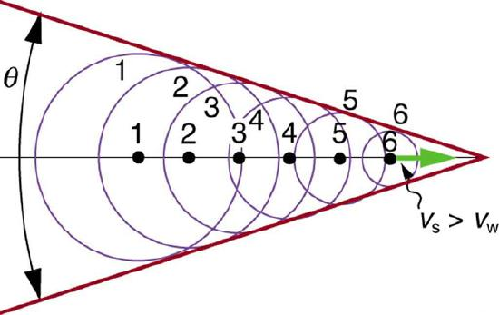
There is constructive interference along the lines shown (a cone in three dimensions) from similar sound waves arriving there simultaneously. This superposition forms a disturbance called asonic boom, a constructive interference of sound created by an object moving faster than sound. Inside the cone, the interference is mostly destructive, and so the sound intensity there is much less than on the shock wave. An aircraft creates two sonic booms, one from its nose and one from its tail. (See Figure .) During television coverage of space shuttle landings, two distinct booms could often be heard. These were separated by exactly the time it would take the shuttle to pass by a point. Observers on the ground often do not see the aircraft creating the sonic boom, because it has passed by before the shock wave reaches them, as seen in Figure . If the aircraft flies close by at low altitude, pressures in the sonic boom can be destructive and break windows as well as rattle nerves. Because of how destructive sonic booms can be, supersonic flights are banned over populated areas of the United States.
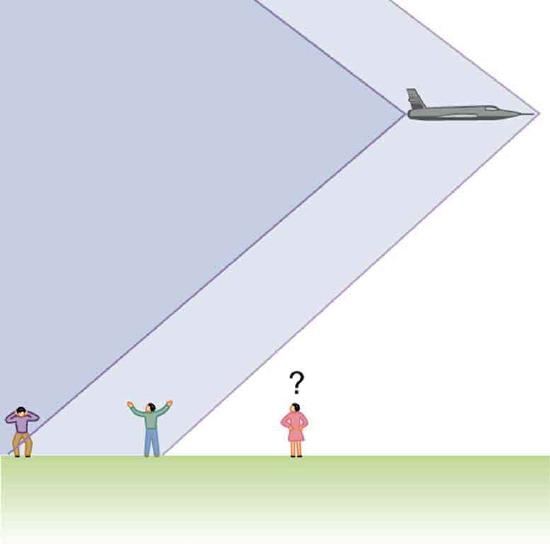
Sonic booms are one example of a broader phenomenon called bow wakes. Abow wake, such as the one in Figure , is created when the wave source moves faster than the wave propagation speed. Water waves spread out in circles from the point where created, and the bow wake is the familiar V-shaped wake trailing the source. A more exotic bow wake is created when a subatomic particle travels through a medium faster than the speed of light travels in that medium. (In a vacuum, the maximum speed of light will be \(3.99 \times 10^8 \, m/s\); in the medium of water, the speed of light is closer to \( 0.75 c\). If the particle creates light in its passage, that light spreads on a cone with an angle indicative of the speed of the particle, as illustrated in Figure . Such a bow wake is called Cerenkov radiation and is commonly observed in particle physics.
Doppler shifts and sonic booms are interesting sound phenomena that occur in all types of waves. They can be of considerable use. For example, the Doppler shift in ultrasound can be used to measure blood velocity, while police use the Doppler shift in radar (a microwave) to measure car velocities. In meteorology, the Doppler shift is used to track the motion of storm clouds; such “Doppler Radar” can give velocity and direction and rain or snow potential of imposing weather fronts. In astronomy, we can examine the light emitted from distant galaxies and determine their speed relative to ours. As galaxies move away from us, their light is shifted to a lower frequency, and so to a longer wavelength—the so-called red shift. Such information from galaxies far, far away has allowed us to estimate the age of the universe (from the Big Bang) as about 14 billion years.
Exercise
Why did scientist Christian Doppler observe musicians both on a moving train and also from a stationary point not on the train?
Doppler needed to compare the perception of sound when the observer is stationary and the sound source moves, as well as when the sound source and the observer are both in motion.
Exercise
Describe a situation in your life when you might rely on the Doppler shift to help you either while driving a car or walking near traffic.
If I am driving and I hear Doppler shift in an ambulance siren, I would be able to tell when it was getting closer and also if it has passed by. This would help me to know whether I needed to pull over and let the ambulance through.
{{template.ContribOpenStaxCollege}
📖 OpenStax College Physics, Section 17.4. openstax.org · CC BY 4.0
- Define antinode, node, fundamental, overtones, and harmonics.
- Identify instances of sound interference in everyday situations.
- Describe how sound interference occurring inside open and closed tubes changes the characteristics of the sound, and how this applies to sounds produced by musical instruments.
- Calculate the length of a tube using sound wave measurements.
Interference is the hallmark of waves, all of which exhibit constructive and destructive interference exactly analogous to that seen for water waves. In fact, one way to prove something “is a wave” is to observe interference effects. So, sound being a wave, we expect it to exhibit interference; we have already mentioned a few such effects, such as the beats from two similar notes played simultaneously.
Figure shows a clever use of sound interference to cancel noise. Larger-scale applications of active noise reduction by destructive interference are contemplated for entire passenger compartments in commercial aircraft. To obtain destructive interference, a fast electronic analysis is performed, and a second sound is introduced with its maxima and minima exactly reversed from the incoming noise. Sound waves in fluids are pressure waves and consistent with Pascal’s principle; pressures from two different sources add and subtract like simple numbers; that is, positive and negative gauge pressures add to a much smaller pressure, producing a lower-intensity sound. Although completely destructive interference is possible only under the simplest conditions, it is possible to reduce noise levels by 30 dB or more using this technique.
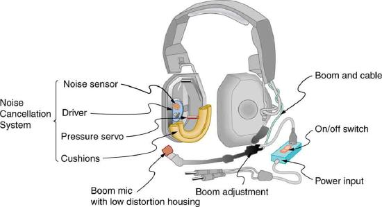
Where else can we observe sound interference? All sound resonances, such as in musical instruments, are due to constructive and destructive interference. Only the resonant frequencies interfere constructively to form standing waves, while others interfere destructively and are absent. From the toot made by blowing over a bottle, to the characteristic flavor of a violin’s sounding box, to the recognizability of a great singer’s voice, resonance and standing waves play a vital role.
Interference is such a fundamental aspect of waves that observing interference is proof that something is a wave. The wave nature of light was established by experiments showing interference. Similarly, when electrons scattered from crystals exhibited interference, their wave nature was confirmed to be exactly as predicted by symmetry with certain wave characteristics of light.
Suppose we hold a tuning fork near the end of a tube that is closed at the other end, as shown in Figure , Figure , Figure , and Figure . If the tuning fork has just the right frequency, the air column in the tube resonates loudly, but at most frequencies it vibrates very little. This observation just means that the air column has only certain natural frequencies. The figures show how a resonance at the lowest of these natural frequencies is formed. A disturbance travels down the tube at the speed of sound and bounces off the closed end. If the tube is just the right length, the reflected sound arrives back at the tuning fork exactly half a cycle later, and it interferes constructively with the continuing sound produced by the tuning fork. The incoming and reflected sounds form a standing wave in the tube as shown.
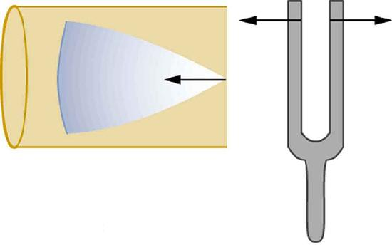
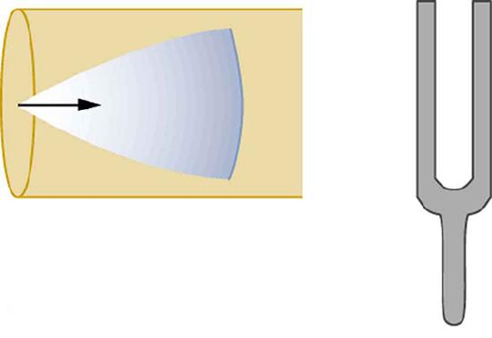
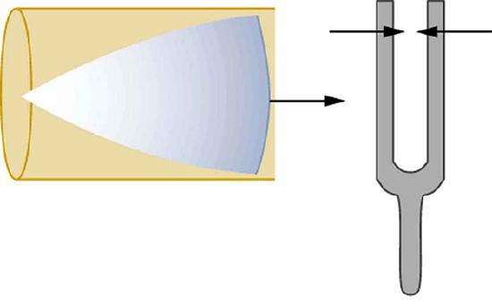

The standing wave formed in the tube has its maximum air displacement (anantinode) at the open end, where motion is unconstrained, and no displacement (anode) at the closed end, where air movement is halted. The distance from a node to an antinode is one-fourth of a wavelength, and this equals the length of the tube; thus, \(\lambda = 4L\). This same resonance can be produced by a vibration introduced at or near the closed end of the tube, as shown in Figure . It is best to consider this a natural vibration of the air column independently of how it is induced.
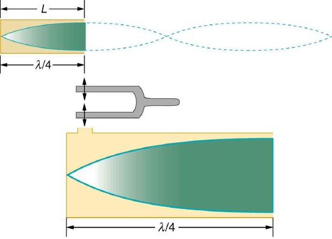
Given that maximum air displacements are possible at the open end and none at the closed end, there are other, shorter wavelengths that can resonate in the tube, such as the one shown in Figure . Here the standing wave has three-fourths of its wavelength in the tube, or \(L = (3/4) \lambda'\), so that \(\lambda' = 4L/3\). Continuing this process reveals a whole series of shorter-wavelength and higher-frequency sounds that resonate in the tube. We use specific terms for the resonances in any system. The lowest resonant frequency is called thefundamental, while all higher resonant frequencies are calledovertones. All resonant frequencies are integral multiples of the fundamental, and they are collectively calledharmonics. The fundamental is the first harmonic, the first overtone is the second harmonic, and so on. Figure hows the fundamental and the first three overtones (the first four harmonics) in a tube closed at one end.
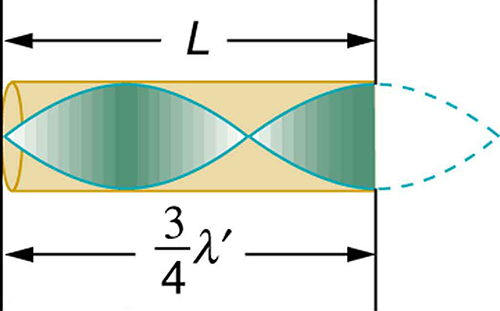
![There are four tubes, each of which is closed at one end. Each tube has resonance waves reflected at the closed end. In the first tube, marked Fundamental, the wavelength is long and only one-fourth of the wave is inside the tube, with the maximum air displacement at the open end. In the second tube, marked First overtone, the wavelength is slightly shorter and three-fourths of the wave is inside the tube, with the maximum air displacement at the open end. In the third tube, marked Second overtone, the wavelength is still shorter and one and one-fourth of the wave is inside the tube, with the maximum air displacement at the open end. In the fourth tube, marked Third overtone, the wavelength is shorter than the others, and one and three-fourths of the wave is inside the tube, with the maximum air displacement at the open end.](images/ch17/fig17-29-there-are-four-tubes-each-of-which-is-cl.jpg)
The fundamental and overtones can be present simultaneously in a variety of combinations. For example, middle C on a trumpet has a sound distinctively different from middle C on a clarinet, both instruments being modified versions of a tube closed at one end. The fundamental frequency is the same (and usually the most intense), but the overtones and their mix of intensities are different and subject to shading by the musician. This mix is what gives various musical instruments (and human voices) their distinctive characteristics, whether they have air columns, strings, sounding boxes, or drumheads. In fact, much of our speech is determined by shaping the cavity formed by the throat and mouth and positioning the tongue to adjust the fundamental and combination of overtones. Simple resonant cavities can be made to resonate with the sound of the vowels, for example. (See Figure .) In boys, at puberty, the larynx grows and the shape of the resonant cavity changes giving rise to the difference in predominant frequencies in speech between men and women.
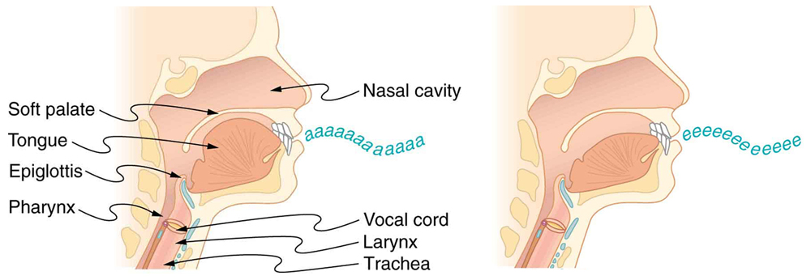
Now let us look for a pattern in the resonant frequencies for a simple tube that is closed at one end. The fundamental has \(\lambda = 4L\), and frequency is related to wavelength and the speed of sound as given by:
Solving for \(f\) in this equation gives
where \(v_w\) is the speed of sound in air. Similarly, the first overtone has \(\lambda' = 4L/3\) (see Figure , so that
Because \(f' = 3f\) we call the first overtone the third harmonic. Continuing this process, we see a pattern that can be generalized in a single expression. The resonant frequencies of a tube closed at one end are
where \(f_1\) is the fundamental, \(f_3\) is the first overtone, and so on. It is interesting that the resonant frequencies depend on the speed of sound and, hence, on temperature. This dependence poses a noticeable problem for organs in old unheated cathedrals, and it is also the reason why musicians commonly bring their wind instruments to room temperature before playing them.
Example: Find the Length of a Tube with a 128 Hz Fundamental
The length \(L\) can be found from the relationship in \(f_n = n\frac{v_w}{4L}\), but we will first need to find the speed of sound \(v_w\).
(2) Use \(f_n = n\frac{v_w}{4L}\) to find the fundamental frequency (n = 1). \[f_1 = \dfrac{v_w}{4L}\]
(3) Solve this equation for length. \[L = \dfrac{v_w}{4f_1}\]
(4) Find the speed of sound using \(v_w = (331 \, m/s)\sqrt{\frac{T}{273 \, K}}\). \[v_w = (331 \, m/s)\sqrt{\dfrac{295 \, K}{273 \, K}} = 344 \, m/s\]
(5) Enter the values of the speed of sound and frequency into the expression for \(L\). \[L = \dfrac{v_w}{4f_1} = \dfrac{344 \, m/s}{4(128 \, Hz)} = 0.672 \, m\]
Many wind instruments are modified tubes that have finger holes, valves, and other devices for changing the length of the resonating air column and hence, the frequency of the note played. Horns producing very low frequencies, such as tubas, require tubes so long that they are coiled into loops.
(2) Enter the value for the fourth overtone into \(f_n = n\frac{v_w}{4L}\). \[f_9 = 9\dfrac{v_w}{4L} = 9f_1 = 1.15 \, kHz\]
Whether this overtone occurs in a simple tube or a musical instrument depends on how it is stimulated to vibrate and the details of its shape. The trombone, for example, does not produce its fundamental frequency and only makes overtones.
Another type of tube is one that isopenat both ends. Examples are some organ pipes, flutes, and oboes. The resonances of tubes open at both ends can be analyzed in a very similar fashion to those for tubes closed at one end. The air columns in tubes open at both ends have maximum air displacements at both ends, as illustrated in Figure . Standing waves form as shown.
![The resonant frequency waves in a tube open at both ends are shown. There are a set of four images. The first image shows a tube of length L marked fundamental having half a wave. The maxima of the vibrations are on both the open ends of the tube. The second image shows a tube of length L marked first over tone having a full wave. The maxima of the vibrations are on both the open ends of the tube. The third image shows a tube of length L marked second over tone having a full wave and a half. The maxima of the vibrations are on both the open ends of the tube. The fourth image shows a tube of length L marked third over tone having two full waves. The maxima of the vibrations are on both the open ends of the tube.](images/ch17/fig17-31-the-resonant-frequency-waves-in-a-tube-o.jpg)
Based on the fact that a tube open at both ends has maximum air displacements at both ends, and using Figure as a guide, we can see that the resonant frequencies of a tube open at both ends are: \[f_n = n\dfrac{v_w}{2L}, \, n = 1, \, 2, \, 3...,\] where \(f_1\) is fundamental, \(f_2\) is the overtone, \(f_3\) is the second overtone, and so on. Note that a tube open at both ends has a fundamental frequency twice what it would have if closed at one end. It also has a different spectrum of overtones than a tube closed at one end. So if you had two tubes with the same fundamental frequency but one was open at both ends and the other was closed at one end, they would sound different when played because they have different overtones. Middle C, for example, would sound richer played on an open tube, because it has even multiples of the fundamental as well as odd. A closed tube has only odd multiples.
REAL WORLD APPLICATIONS: RESONANCE IN EVERYDAY
Resonance occurs in many different systems, including strings, air columns, and atoms. Resonance is the driven or forced oscillation of a system at its natural frequency. At resonance, energy is transferred rapidly to the oscillating system, and the amplitude of its oscillations grows until the system can no longer be described by Hooke’s law. An example of this is the distorted sound intentionally produced in certain types of rock music.
Wind instruments use resonance in air columns to amplify tones made by lips or vibrating reeds. Other instruments also use air resonance in clever ways to amplify sound. Figure hows a violin and a guitar, both of which have sounding boxes but with different shapes, resulting in different overtone structures. The vibrating string creates a sound that resonates in the sounding box, greatly amplifying the sound and creating overtones that give the instrument its characteristic flavor. The more complex the shape of the sounding box, the greater its ability to resonate over a wide range of frequencies. The marimba, like the one shown in Figure ses pots or gourds below the wooden slats to amplify their tones. The resonance of the pot can be adjusted by adding water.
We have emphasized sound applications in our discussions of resonance and standing waves, but these ideas apply to any system that has wave characteristics. Vibrating strings, for example, are actually resonating and have fundamentals and overtones similar to those for air columns. More subtle are the resonances in atoms due to the wave character of their electrons. Their orbitals can be viewed as standing waves, which have a fundamental (ground state) and overtones (excited states). It is fascinating that wave characteristics apply to such a wide range of physical systems.
Exercise
Describe how noise-canceling headphones differ from standard headphones used to block outside sounds.
Regular headphones only block sound waves with a physical barrier. Noise-canceling headphones use destructive interference to reduce the loudness of outside sounds.
Exercise
How is it possible to use a standing wave's node and antinode to determine the length of a closed-end tube?
When the tube resonates at its natural frequency, the wave's node is located at the closed end of the tube, and the antinode is located at the open end. The length of the tube is equal to one-fourth of the wavelength of this wave. Thus, if we know the wavelength of the wave, we can determine the length of the tube.
PHET EXPLORATIONS: SOUND
Thissimulationlets you see sound waves. Adjust the frequency or volume and you can see and hear how the wave changes. Move the listener around and hear what she hears.
📖 OpenStax College Physics, Section 17.5. openstax.org · CC BY 4.0
- Define hearing, pitch, loudness, timbre, note, tone, phon, ultrasound, and infrasound.
- Compare loudness to frequency and intensity of a sound.
- Identify structures of the inner ear and explain how they relate to sound perception.
The human ear has a tremendous range and sensitivity. It can give us a wealth of simple information—such as pitch, loudness, and direction. And from its input we can detect musical quality and nuances of voiced emotion. How is our hearing related to the physical qualities of sound, and how does the hearing mechanism work?
Hearingis the perception of sound. (Perception is commonly defined to be awareness through the senses, a typically circular definition of higher-level processes in living organisms.) Normal human hearing encompasses frequencies from 20 to 20,000 Hz, an impressive range. Sounds below 20 Hz are calledinfrasound, whereas those above 20,000 Hz areultrasound. Neither is perceived by the ear, although infrasound can sometimes be felt as vibrations. When we do hear low-frequency vibrations, such as the sounds of a diving board, we hear the individual vibrations only because there are higher-frequency sounds in each. Other animals have hearing ranges different from that of humans. Dogs can hear sounds as high as 30,000 Hz, whereas bats and dolphins can hear up to 100,000-Hz sounds. You may have noticed that dogs respond to the sound of a dog whistle which produces sound out of the range of human hearing. Elephants are known to respond to frequencies below 20 Hz.
The perception of frequency is calledpitch. Most of us have excellent relative pitch, which means that we can tell whether one sound has a different frequency from another. Typically, we can discriminate between two sounds if their frequencies differ by 0.3% or more. For example, 500.0 and 501.5 Hz are noticeably different. Pitch perception is directly related to frequency and is not greatly affected by other physical quantities such as intensity. Musicalnotesare particular sounds that can be produced by most instruments and in Western music have particular names. Combinations of notes constitute music. Some people can identify musical notes, such as A-sharp, C, or E-flat, just by listening to them. This uncommon ability is called perfect pitch. The ear is remarkably sensitive to low-intensity sounds. The lowest audible intensity or threshold is about \(10^{-12} \, W/m^2\) or 0 dB. Sounds as much as \(10^{12}\) more intense can be briefly tolerated. Very few measuring devices are capable of observations over a range of a trillion. The perception of intensity is calledloudness. At a given frequency, it is possible to discern differences of about 1 dB, and a change of 3 dB is easily noticed. But loudness is not related to intensity alone. Frequency has a major effect on how loud a sound seems. The ear has its maximum sensitivity to frequencies in the range of 2000 to 5000 Hz, so that sounds in this range are perceived as being louder than, say, those at 500 or 10,000 Hz, even when they all have the same intensity. Sounds near the high- and low-frequency extremes of the hearing range seem even less loud, because the ear is even less sensitive at those frequencies. Table gives the dependence of certain human hearing perceptions on physical quantities.
| Perception | Physical quantity |
|---|---|
| Pitch | Frequency |
| Loudness | Intensity and Frequency |
| Timbre | Number and relative intensity of multiple frequencies.Subtle craftsmanship leads to non-linear effects and more detail. |
| Note | Basic unit of music with specific names, combined to generate tunes |
| Tone | Number and relative intensity of multiple frequencies. |
Number and relative intensity of multiple frequencies.
Subtle craftsmanship leads to non-linear effects and more detail.
When a violin plays middle C, there is no mistaking it for a piano playing the same note. The reason is that each instrument produces a distinctive set of frequencies and intensities. We call our perception of these combinations of frequencies and intensitiestonequality, or more commonly thetimbreof the sound. It is more difficult to correlate timbre perception to physical quantities than it is for loudness or pitch perception. Timbre is more subjective. Terms such as dull, brilliant, warm, cold, pure, and rich are employed to describe the timbre of a sound. So the consideration of timbre takes us into the realm of perceptual psychology, where higher-level processes in the brain are dominant. This is true for other perceptions of sound, such as music and noise. We shall not delve further into them; rather, we will concentrate on the question of loudness perception.
A unit called aphonis used to express loudness numerically. Phons differ from decibels because the phon is a unit of loudness perception, whereas the decibel is a unit of physical intensity. Figure shows the relationship of loudness to intensity (or intensity level) and frequency for persons with normal hearing. The curved lines are equal-loudness curves. Each curve is labeled with its loudness in phons. Any sound along a given curve will be perceived as equally loud by the average person. The curves were determined by having large numbers of people compare the loudness of sounds at different frequencies and sound intensity levels. At a frequency of 1000 Hz, phons are taken to be numerically equal to decibels. The following example helps illustrate how to use the graph:
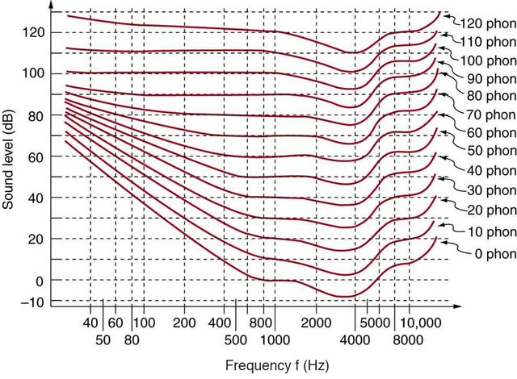
(a) What is the loudness in phons of a 100-Hz sound that has an intensity level of 80 dB? (b) What is the intensity level in decibels of a 4000-Hz sound having a loudness of 70 phons? (c) At what intensity level will an 8000-Hz sound have the same loudness as a 200-Hz sound at 60 dB?
The graph in Figure should be referenced in order to solve this example. To find the loudness of a given sound, you must know its frequency and intensity level and locate that point on the square grid, then interpolate between loudness curves to get the loudness in phons.
(2) Find the loudness: 75 phons.
The graph in Figure should be referenced in order to solve this example. To find the intensity level of a sound, you must have its frequency and loudness. Once that point is located, the intensity level can be determined from the vertical axis.
(2) Follow the 70-phon curve until it reaches 4000 Hz. At that point, it is below the 70 dB line at about 67 dB.
(3) Find the intensity level:
The graph in Figure should be referenced in order to solve this example.
(1) Locate the point for a 200 Hz and 60 dB sound.
(2) Find the loudness: This point lies just slightly above the 50-phon curve, and so its loudness is 51 phons.
(3) Look for the 51-phon level is at 8000 Hz: 63 dB.
These answers, like all information extracted from Figure , have uncertainties of several phons or several decibels, partly due to difficulties in interpolation, but mostly related to uncertainties in the equal-loudness curves.
Further examination of the graph in Figure reveals some interesting facts about human hearing. First, sounds below the 0-phon curve are not perceived by most people. So, for example, a 60 Hz sound at 40 dB is inaudible. The 0-phon curve represents the threshold of normal hearing. We can hear some sounds at intensity levels below 0 dB. For example, a 3-dB, 5000-Hz sound is audible, because it lies above the 0-phon curve. The loudness curves all have dips in them between about 2000 and 5000 Hz. These dips mean the ear is most sensitive to frequencies in that range. For example, a 15-dB sound at 4000 Hz has a loudness of 20 phons, the same as a 20-dB sound at 1000 Hz. The curves rise at both extremes of the frequency range, indicating that a greater-intensity level sound is needed at those frequencies to be perceived to be as loud as at middle frequencies. For example, a sound at 10,000 Hz must have an intensity level of 30 dB to seem as loud as a 20 dB sound at 1000 Hz. Sounds above 120 phons are painful as well as damaging.
We do not often utilize our full range of hearing. This is particularly true for frequencies above 8000 Hz, which are rare in the environment and are unnecessary for understanding conversation or appreciating music. In fact, people who have lost the ability to hear such high frequencies are usually unaware of their loss until tested. The shaded region in Figure is the frequency and intensity region where most conversational sounds fall. The curved lines indicate what effect hearing losses of 40 and 60 phons will have. A 40-phon hearing loss at all frequencies still allows a person to understand conversation, although it will seem very quiet. A person with a 60-phon loss at all frequencies will hear only the lowest frequencies and will not be able to understand speech unless it is much louder than normal. Even so, speech may seem indistinct, because higher frequencies are not as well perceived. The conversational speech region also has a gender component, in that female voices are usually characterized by higher frequencies. So the person with a 60-phon hearing impediment might have difficulty understanding the normal conversation of a woman.
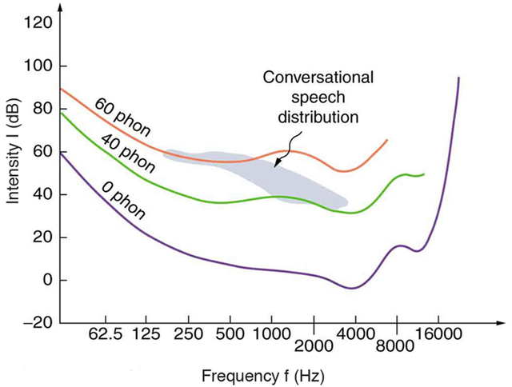
Hearing tests are performed over a range of frequencies, usually from 250 to 8000 Hz, and can be displayed graphically in an audiogram like that in Figure . The hearing threshold is measured in dBrelative to the normal threshold, so that normal hearing registers as 0 dB at all frequencies. Hearing loss caused by noise typically shows a dip near the 4000 Hz frequency, irrespective of the frequency that caused the loss and often affects both ears. The most common form of hearing loss comes with age and is calledpresbycusis—literally elder ear. Such loss is increasingly severe at higher frequencies, and interferes with music appreciation and speech recognition.
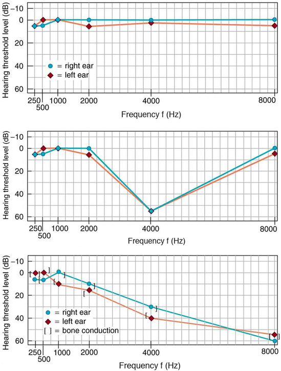
The hearing mechanism involves some interesting physics. The sound wave that impinges upon our ear is a pressure wave. The ear is a transducer that converts sound waves into electrical nerve impulses in a manner much more sophisticated than, but analogous to, a microphone. Figure shows the gross anatomy of the ear with its division into three parts: the outer ear or ear canal; the middle ear, which runs from the eardrum to the cochlea; and the inner ear, which is the cochlea itself. The body part normally referred to as the ear is technically called the pinna.
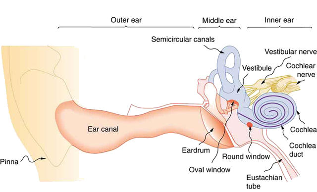
The outer ear, or ear canal, carries sound to the recessed protected eardrum. The air column in the ear canal resonates and is partially responsible for the sensitivity of the ear to sounds in the 2000 to 5000 Hz range. The middle ear converts sound into mechanical vibrations and applies these vibrations to the cochlea. The lever system of the middle ear takes the force exerted on the eardrum by sound pressure variations, amplifies it and transmits it to the inner ear via the oval window, creating pressure waves in the cochlea approximately 40 times greater than those impinging on the eardrum (Figure .) Two muscles in the middle ear (not shown) protect the inner ear from very intense sounds. They react to intense sound in a few milliseconds and reduce the force transmitted to the cochlea. This protective reaction can also be triggered by your own voice, so that humming while shooting a gun, for example, can reduce noise damage.
![The schematic diagram of the middle ear’s system for converting sound pressure is shown. There is a pressure P one applied on the ear drum shown as a vertical line. The pressure P one travels along a horizontal line marked hammer as force F one. Then up a vertical line marked anvil and reaches a point marked pivot. Then this travels as a force F two along a horizontal line marked stirrup and reaches the oval window shown by a vertical line then passes by it as pressure P two. The pivot point has another support held vertically.](images/ch17/fig17-39-the-schematic-diagram-of-the-middle-ears.jpg)
Figure shows the middle and inner ear in greater detail. Pressure waves moving through the cochlea cause the tectorial membrane to vibrate, rubbing cilia (called hair cells), which stimulate nerves that send electrical signals to the brain. The membrane resonates at different positions for different frequencies, with high frequencies stimulating nerves at the near end and low frequencies at the far end. The complete operation of the cochlea is still not understood, but several mechanisms for sending information to the brain are known to be involved. For sounds below about 1000 Hz, the nerves send signals at the same frequency as the sound. For frequencies greater than about 1000 Hz, the nerves signal frequency by position. There is a structure to the cilia, and there are connections between nerve cells that perform signal processing before information is sent to the brain. Intensity information is partly indicated by the number of nerve signals and by volleys of signals. The brain processes the cochlear nerve signals to provide additional information such as source direction (based on time and intensity comparisons of sounds from both ears). Higher-level processing produces many nuances, such as music appreciation.
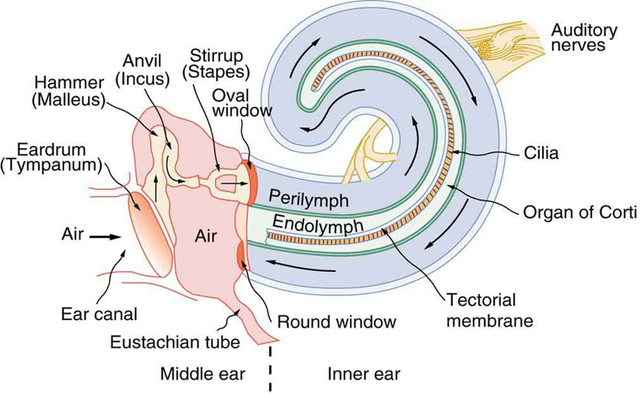
Hearing losses can occur because of problems in the middle or inner ear. Conductive losses in the middle ear can be partially overcome by sending sound vibrations to the cochlea through the skull. Hearing aids for this purpose usually press against the bone behind the ear, rather than simply amplifying the sound sent into the ear canal as many hearing aids do. Damage to the nerves in the cochlea is not repairable, but amplification can partially compensate. There is a risk that amplification will produce further damage. Another common failure in the cochlea is damage or loss of the cilia but with nerves remaining functional. Cochlear implants that stimulate the nerves directly are now available and widely accepted. Over 100,000 implants are in use, in about equal numbers of adults and children.
The cochlear implant was pioneered in Melbourne, Australia, by Graeme Clark in the 1970s for his deaf father. The implant consists of three external components and two internal components. The external components are a microphone for picking up sound and converting it into an electrical signal, a speech processor to select certain frequencies and a transmitter to transfer the signal to the internal components through electromagnetic induction. The internal components consist of a receiver/transmitter secured in the bone beneath the skin, which converts the signals into electric impulses and sends them through an internal cable to the cochlea and an array of about 24 electrodes wound through the cochlea. These electrodes in turn send the impulses directly into the brain. The electrodes basically emulate the cilia.
Exercise
Are ultrasound and infrasound imperceptible to all hearing organisms? Explain your answer.
No, the range of perceptible sound is based in the range of human hearing. Many other organisms perceive either infrasound or ultrasound.
📖 OpenStax College Physics, Section 17.6. openstax.org · CC BY 4.0
- Define acoustic impedance and intensity reflection coefficient.
- Describe medical and other uses of ultrasound technology.
- Calculate acoustic impedance using density values and the speed of ultrasound.
- Calculate the velocity of a moving object using Doppler-shifted ultrasound.
Any sound with a frequency above 20,000 Hz (or 20 kHz)—that is, above the highest audible frequency—is defined to be ultrasound. In practice, it is possible to create ultrasound frequencies up to more than a gigahertz. (Higher frequencies are difficult to create; furthermore, they propagate poorly because they are very strongly absorbed.) Ultrasound has a tremendous number of applications, which range from burglar alarms to use in cleaning delicate objects to the guidance systems of bats. We begin our discussion of ultrasound with some of its applications in medicine, in which it is used extensively both for diagnosis and for therapy.
Characteristics of Ultrasound
Any sound with a frequency above 20,000 Hz (or 20 kHz)—that is, above the highest audible frequency—is defined to be ultrasound. In practice, it is possible to create ultrasound frequencies up to more than a gigahertz. (Higher frequencies are difficult to create; furthermore, they propagate poorly because they are very strongly absorbed.) Ultrasound has a tremendous number of applications, which range from burglar alarms to use in cleaning delicate objects to the guidance systems of bats. We begin our discussion of ultrasound with some of its applications in medicine, in which it is used extensively both for diagnosis and for therapy.
Ultrasound, like any wave, carries energy that can be absorbed by the medium carrying it, producing effects that vary with intensity. When focused to intensities of \(10^3\) to \(10^5 \, W/m^2\) ultrasound can be used to shatter gallstones or pulverize cancerous tissue in surgical procedures (Figure . Intensities this great can damage individual cells, variously causing their protoplasm to stream inside them, altering their permeability, or rupturing their walls throughcavitation. Cavitation is the creation of vapor cavities in a fluid—the longitudinal vibrations in ultrasound alternatively compress and expand the medium, and at sufficient amplitudes the expansion separates molecules. Most cavitation damage is done when the cavities collapse, producing even greater shock pressures.
Most of the energy carried by high-intensity ultrasound in tissue is converted to thermal energy. In fact, intensities of \(10^3\) to \(10^4 \, W/m^2\) are commonly used for deep-heat treatments called ultrasound diathermy. Frequencies of 0.8 to 1 MHz are typical. In both athletics and physical therapy, ultrasound diathermy is most often applied to injured or overworked muscles to relieve pain and improve flexibility. Skill is needed by the therapist to avoid “bone burns” and other tissue damage caused by overheating and cavitation, sometimes made worse by reflection and focusing of the ultrasound by joint and bone tissue.
In some instances, you may encounter a different decibel scale, called the sound pressure level, when ultrasound travels in water or in human and other biological tissues. We shall not use the scale here, but it is notable that numbers for sound pressure levels range 60 to 70 dB higher than you would quote for \(β\), the sound intensity level used in this text. Should you encounter a sound pressure level of 220 decibels, then, it is not an astronomically high intensity, but equivalent to about 155 dB—high enough to destroy tissue, but not as unreasonably high as it might seem at first.
When used for imaging, ultrasonic waves are emitted from a transducer, a crystal exhibiting the piezoelectric effect (the expansion and contraction of a substance when a voltage is applied across it, causing a vibration of the crystal). These high-frequency vibrations are transmitted into any tissue in contact with the transducer. Similarly, if a pressure is applied to the crystal (in the form of a wave reflected off tissue layers), a voltage is produced which can be recorded. The crystal therefore acts as both a transmitter and a receiver of sound. Ultrasound is also partially absorbed by tissue on its path, both on its journey away from the transducer and on its return journey. From the time between when the original signal is sent and when the reflections from various boundaries between media are received, (as well as a measure of the intensity loss of the signal), the nature and position of each boundary between tissues and organs may be deduced.
Reflections at boundaries between two different media occur because of differences in a characteristic known as theacoustic impedance\(Z\) of each substance. Impedance is defined as
where \(\rho\) is the density of the medium (in kg/m^3\) ) and \(v\) is the speed of sound through the medium (in m/s). The units for \(Z\) are therefore \(kg/(m^2 \cdot s)\).
Table shows the density and speed of sound through various media (including various soft tissues) and the associated acoustic impedances. Note that the acoustic impedances for soft tissue do not vary much but that there is a big difference between the acoustic impedance of soft tissue and air and also between soft tissue and bone.
| Medium | Density \((kg/m^3)\) | Speed of Ultrasound (m/s) | Acoustic Impedence \((kg/(m^2\cdot s))\) |
|---|---|---|---|
| Air | 1.3 | 330 | 429 |
| Water | 1000 | 1500 | \(1.5 \times 10^6\) |
| Blood | 1060 | 1570 | \(1.66 \times 10^6\) |
| Fat | 925 | 1450 | 1.34(1000000) |
| Muscle (average) | 1075 | 1590 | 1.7(1000000) |
| Bone (varies) | 1400–1900 | 4080 | 5.7 to 7.8(1000000 |
| Barium titanate (transducer material) | 5600 | 5500 | 30.8(1000000) |
At the boundary between media of different acoustic impedances, some of the wave energy is reflected and some is transmitted. The greater thedifferencein acoustic impedance between the two media, the greater the reflection and the smaller the transmission.
Theintensity reflection coefficient \(a\) is defined as the ratio of the intensity of the reflected wave relative to the incident (transmitted) wave. This statement can be written mathematically as
where \(Z_{1}\) and \(Z_{2}\) are the acoustic impedances of the two media making up the boundary. A reflection coefficient of zero (corresponding to total transmission and no reflection) occurs when the acoustic impedances of the two media are the same. An impedance “match” (no reflection) provides an efficient coupling of sound energy from one medium to another. The image formed in an ultrasound is made by tracking reflections (as shown in Figure and mapping the intensity of the reflected sound waves in a two-dimensional plane.
(a) Using the values for density and the speed of ultrasound given in Table , show that the acoustic impedance of fat tissue is indeed \(1.34 \times 10^{6}kg / \left( m^{2} \cdot s \right)\).
(b) Calculate the intensity reflection coefficient of ultrasound when going from fat to muscle tissue.
The acoustic impedance can be calculated using \(Z = \rho v\) and the values for \(\rho\) and \(v\) found in Table .
(1) Substitute known values from Table into \(Z = \rho v\).
(2) Calculate to find the acoustic impedance of fat tissue.
This value is the same as the value given for the acoustic impedance of fat tissue.
The intensity reflection coefficient for any boundary between two media is given by \(a = \frac{\left(Z_{2} - Z_{1}\right)^{2}}{\left(Z_{2} + Z_{1}\right)^{2}}\), and the acoustic impedance of muscle is given in Table .
Substitute known values into \(a = \frac{\left(Z_{2} - Z_{1}\right)^{2}}{\left(Z_{2} + Z_{1}\right)^{2}}\) to find the intensity reflection coefficient:
This result means that only 1.4% of the incident intensity is reflected, with the remaining being transmitted.
The applications of ultrasound in medical diagnostics have produced untold benefits with no known risks. Diagnostic intensities are too low (about \(10^{-2} W/m^{2}\)) to cause thermal damage. More significantly, ultrasound has been in use for several decades and detailed follow-up studies do not show evidence of ill effects, quite unlike the case for x-rays.
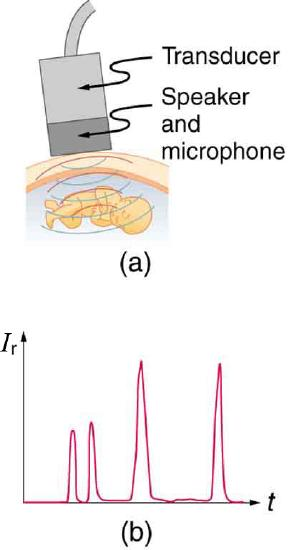
The most common ultrasound applications produce an image like that shown in Figure . The speaker-microphone broadcasts a directional beam, sweeping the beam across the area of interest. This is accomplished by having multiple ultrasound sources in the probe’s head, which are phased to interfere constructively in a given, adjustable direction. Echoes are measured as a function of position as well as depth. A computer constructs an image that reveals the shape and density of internal structures.
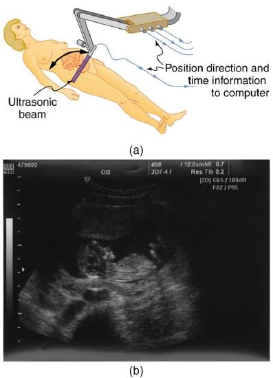
How much detail can ultrasound reveal? The image in Figure is typical of low-cost systems, but that in shows the remarkable detail possible with more advanced systems, including 3D imaging. Ultrasound today is commonly used in prenatal care. Such imaging can be used to see if the fetus is developing at a normal rate, and help in the determination of serious problems early in the pregnancy. Ultrasound is also in wide use to image the chambers of the heart and the flow of blood within the beating heart, using the Doppler effect (echocardiology).
Whenever a wave is used as a probe, it is very difficult to detect details smaller than its wavelength \(\lambda\). Indeed, current technology cannot do quite this well. Abdominal scans may use a 7-MHz frequency, and the speed of sound in tissue is about 1540 m/s -- so the wavelength limit to detail would be \(\lambda = \frac{v_{w}}{f} = \frac{1540 m/s}{7 \times 10^{6} Hz} = 0.22mm\). In practice, 1-mm detail is attainable, which is sufficient for many purposes. Higher-frequency ultrasound would allow greater detail, but it does not penetrate as well as lower frequencies do. The accepted rule of thumb is that you can effectively scan to a depth of about \(500 \lambda\) into tissue. For 7 MHz, this penetration limit is \(500 \times 0.22 mm\), which is 0.11 m. Higher frequencies may be employed in smaller organs, such as the eye, but are not practical for looking deep into the body.
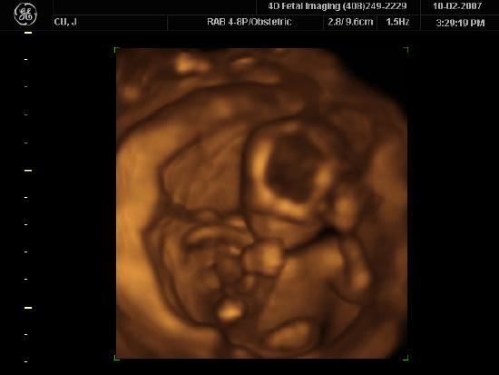
In addition to shape information, ultrasonic scans can produce density information superior to that found in X-rays, because the intensity of a reflected sound is related to changes in density. Sound is most strongly reflected at places where density changes are greatest.
Another major use of ultrasound in medical diagnostics is to detect motion and determine velocity through the Doppler shift of an echo, known asDoppler-shifted ultrasound. This technique is used to monitor fetal heartbeat, measure blood velocity, and detect occlusions in blood vessels, for example. (See Figure .)
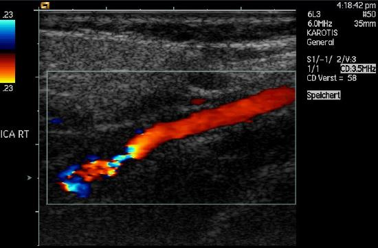
A clever technique is used to measure the Doppler shift in an echo. The frequency of the echoed sound is superimposed on the broadcast frequency, producing beats. The beat frequency is \(F_{B} = \vert f_{1} - f_{2} \vert \), and so it is directly proportional to the Doppler shift ( \(f_{1} - f_{2}\) ) and hence, the reflector’s velocity. The advantage in this technique is that the Doppler shift is small (because the reflector’s velocity is small), so that great accuracy would be needed to measure the shift directly. But measuring the beat frequency is easy, and it is not affected if the broadcast frequency varies somewhat. Furthermore, the beat frequency is in the audible range and can be amplified for audio feedback to the medical observer.
USES FOR DOPPLER-SHIFTED RADAR
Doppler-shifted radar echoes are used to measure wind velocities in storms as well as aircraft and automobile speeds. The principle is the same as for Doppler-shifted ultrasound. There is evidence that bats and dolphins may also sense the velocity of an object (such as prey) reflecting their ultrasound signals by observing its Doppler shift.
Ultrasound that has a frequency of 2.50 MHz is sent toward blood in an artery that is moving toward the source at 20.0 cm/s, as illustrated in Figure . Use the speed of sound in human tissue as 1540 m/s. (Assume that the frequency of 2.50 MHz is accurate to seven significant figures.)
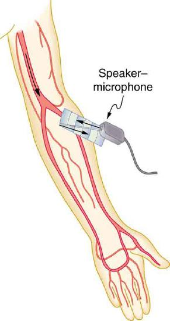
The first two questions can be answered using \(f_{obs} = f_{s} \left(\frac{v_{w}}{v_{w} \pm v_{s}}\right)\) and \(f_{obs} = f_{s} \left(\frac{v_{w} \pm v_{obs}}{v_{w}}\right)\) for the Doppler shift. The last question asks for beat frequency, which is the difference between the original and returning frequencies.
The Doppler shifts are quite small compared with the original frequency of 2.50 MHz. It is far easier to measure the beat frequency than it is to measure the echo frequency with an accuracy great enough to see shifts of a few hundred hertz out of a couple of megahertz. Furthermore, variations in the source frequency do not greatly affect the beat frequency, because both \(f_{s}\) and \(f_{obs}\) would increase or decrease. Those changes subtract out in \(f_{B} = \vert f_{obs} - f_{s} \vert\).
INDUSTRIAL AND OTHER APPLICATIONS OF ULTRASOUND
Industrial, retail, and research applications of ultrasound are common. A few are discussed here. Ultrasonic cleaners have many uses. Jewelry, machined parts, and other objects that have odd shapes and crevices are immersed in a cleaning fluid that is agitated with ultrasound typically about 40 kHz in frequency. The intensity is great enough to cause cavitation, which is responsible for most of the cleansing action. Because cavitation-produced shock pressures are large and well transmitted in a fluid, they reach into small crevices where even a low-surface-tension cleaning fluid might not penetrate.
Sonar is a familiar application of ultrasound. Sonar typically employs ultrasonic frequencies in the range from 30.0 to 100 kHz. Bats, dolphins, submarines, and even some birds use ultrasonic sonar. Echoes are analyzed to give distance and size information both for guidance and finding prey. In most sonar applications, the sound reflects quite well because the objects of interest have significantly different density than the medium in which they travel. When the Doppler shift is observed, velocity information can also be obtained. Submarine sonar can be used to obtain such information, and there is evidence that some bats also sense velocity from their echoes.
Similarly, there are a range of relatively inexpensive devices that measure distance by timing ultrasonic echoes. Many cameras, for example, use such information to focus automatically. Some doors open when their ultrasonic ranging devices detect a nearby object, and certain home security lights turn on when their ultrasonic rangers observe motion. Ultrasonic “measuring tapes” also exist to measure such things as room dimensions. Sinks in public restrooms are sometimes automated with ultrasound devices to turn faucets on and off when people wash their hands. These devices reduce the spread of germs and can conserve water.
Ultrasound is used for nondestructive testing in industry and by the military. Because ultrasound reflects well from any large change in density, it can reveal cracks and voids in solids, such as aircraft wings, that are too small to be seen with x-rays. For similar reasons, ultrasound is also good for measuring the thickness of coatings, particularly where there are several layers involved.
Basic research in solid state physics employs ultrasound. Its attenuation is related to a number of physical characteristics, making it a useful probe. Among these characteristics are structural changes such as those found in liquid crystals, the transition of a material to a superconducting phase, as well as density and other properties.
These examples of the uses of ultrasound are meant to whet the appetites of the curious, as well as to illustrate the underlying physics of ultrasound. There are many more applications, as you can easily discover for yourself.
Exercise
Why is it possible to use ultrasound both to observe a fetus in the womb and also to destroy cancerous tumors in the body?
Ultrasound can be used medically at different intensities. Lower intensities do not cause damage and are used for medical imaging. Higher intensities can pulverize and destroy targeted substances in the body, such as tumors.
📖 OpenStax College Physics, Section 17.7. openstax.org · CC BY 4.0
| Section | Title |
|---|---|
| 17.1 | 17.1: Sound |
| 17.2 | 17.2: Speed of Sound, Frequency, and Wavelength |
| 17.3 | 17.3: Sound Intensity and Sound Level |
| 17.4 | 17.4: Doppler Effect and Sonic Booms |
| 17.5 | 17.5: Sound Interference and Resonance- Standing Waves in Air Columns |
| 17.6 | 17.6: Hearing |
| 17.7 | 17.7: Ultrasound |